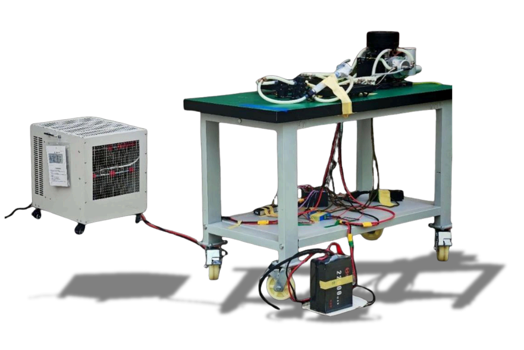

AeroBOT-D3 无人机增程式混合动力测试平台
无人机动力实验室系列高端测试设备，面向新能源增程无人机研发验证，集成远程操控、多参数据采集、起发一体、液冷散热全链路测试系统。

产品概述
AeroBOT-D3 属于无人机动力实验室系列产品，是一套高性能多功能混合动力增程器试验台架，专为新能源无人机增程系统研发、性能测试与控制算法验证打造。设备集成无线遥控、多通道数据遥测、起发一体架构三大核心模块，集成度高、智能化强、拓展性优异，可完整模拟增程器全工况运行状态，完成动力性能评估与控制策略优化；配套专用液冷散热系统稳定核心部件温度，搭配可视化上位机软件实时解析运行数据，兼顾高校新能源无人机教学、企业增程动力研发标定、故障诊断实验等多元使用需求。
核心功能
远程遥控控制：搭载无线遥控操作系统，支持远距离启停、运行模式切换，有效隔离高风险测试场景，遥控有效距离≥50m，提升测试安全与操作灵活度。
多通道数据遥测：内置多路传感器采集模块，实时监测转速、输出电压/电流/功率、温度等关键参数，无线回传至上位机，支撑算法优化与故障诊断。
起发一体化架构：启动电机与发电机共用单台永磁同步电机，通过双向逆变器实现启动、发电双模式智能切换，简化增程器结构模拟。
高效液冷散热系统：循环液冷散热方案，适配增程器持续工作散热需求，将缸头、电机、逆变器温度稳定控制在0~120℃安全区间，避免高温损耗，保障长时间连续测试。
产品特点
操控-测试-分析一体化集成设计，一站式完成增程动力全流程试验。
可视化人机交互界面，支持仪表盘、实时曲线、数据表三种数据展示形式。
无线远程测控方案，运行数据实时回传，配套远程自动安全启停功能。
基本配置参数
应用价值
AeroBOT-D3 填补新能源增程式无人机地面测试设备空白，教学端可支撑高校新能源动力、无人机工程专业完成混合动力原理教学与综合实验；研发端可在地面完整验证增程器发电效率、启动特性、高温耐久性能，无需搭载真机升空测试，大幅降低研发试飞成本与安全隐患；同时支持增程器控制算法迭代优化、零部件耐久测试，助力长航时混动无人机产品落地。
适用场景
高校无人机动力实验室、新能源增程无人机研发标定、混动动力系统教学实训、长航时工业无人机动力测试、增程器控制算法科研验证、动力设备耐久与故障检测实验。